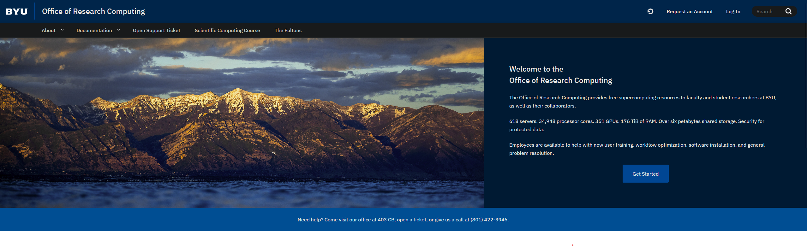
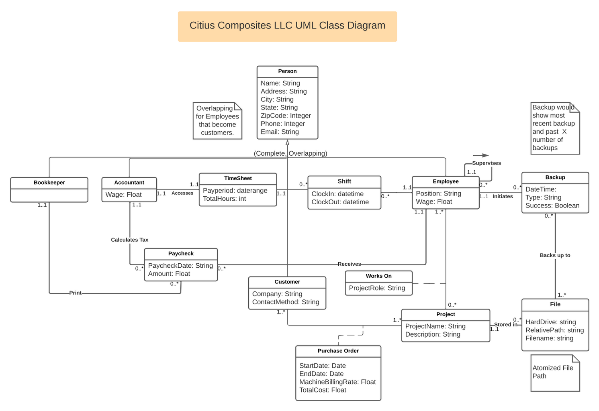
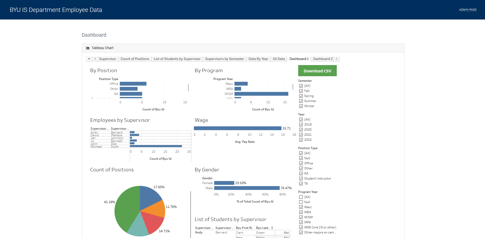
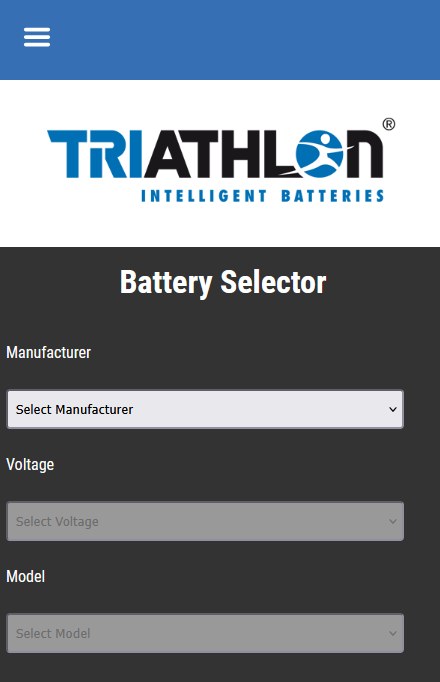
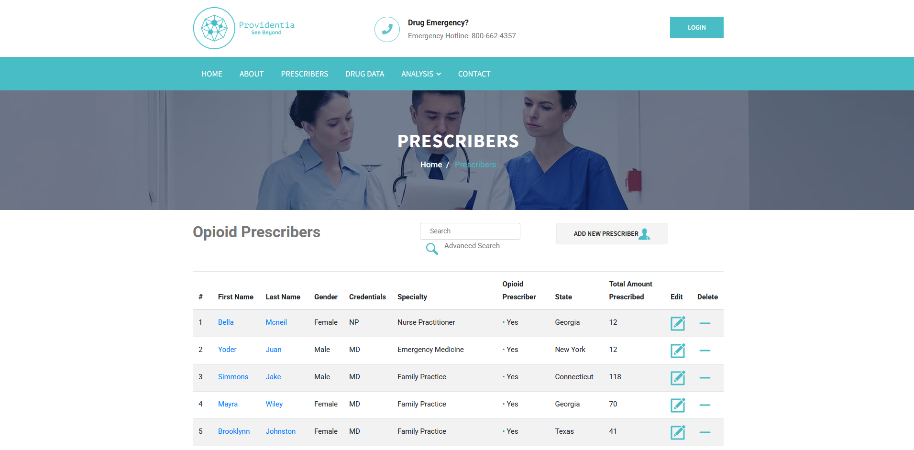
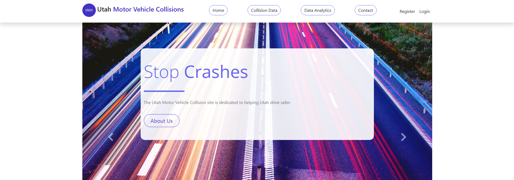

HELLO
THERE
THERE
2026
A constantly evolving index of work
Things I’ve made
to make things better.
I’m Matt—developer, data person, and lifelong tinkerer. These are selected projects across product, strategy, and information design.
SCROLL TO BROWSE ↓
01
Research computing · WebOffice of
Explore project ↗
Office of
Research Computing
Explore project ↗
02
Data & strategy
Citius
Explore project ↗
03
Information systems · BIDepartment
Explore project ↗
Department
Dashboard
Explore project ↗
04
Product tool · UXTriathlon
Explore project ↗
Triathlon
Battery Selector
Explore project ↗
05
Data explorationPrescriber
Explore project ↗
Prescriber
Insights
Explore project ↗
06
Public data · AnalyticsCollision
Explore project ↗
Collision
Analytics
Explore project ↗
A little background
Equal parts curious
and useful.
I turn complicated information into clearer tools, whether that means a dashboard, an application, or a better way to explore data. I’m especially interested in work that sits between people and technology.
Send an email →